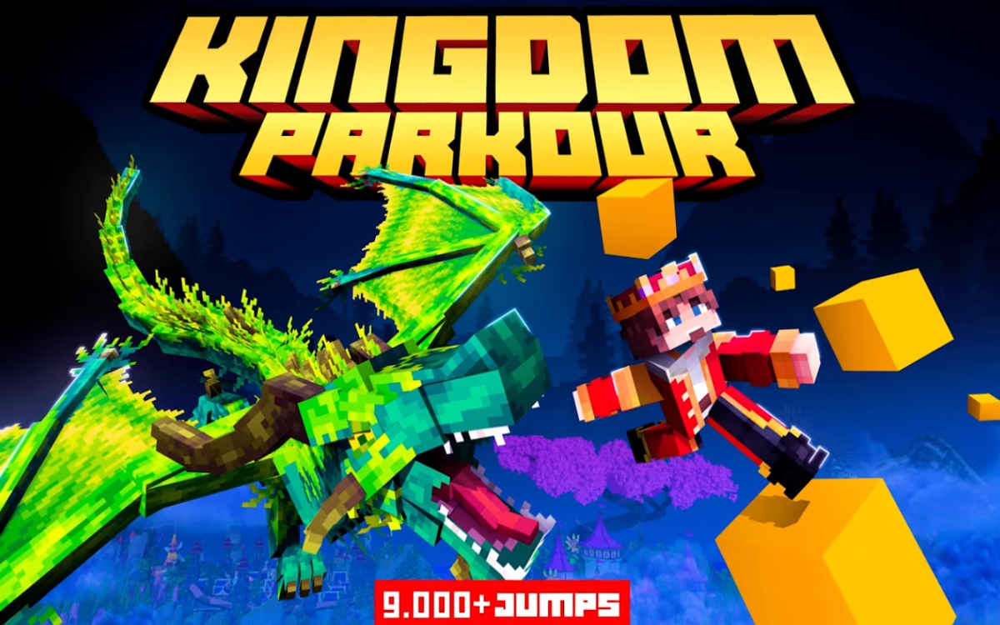
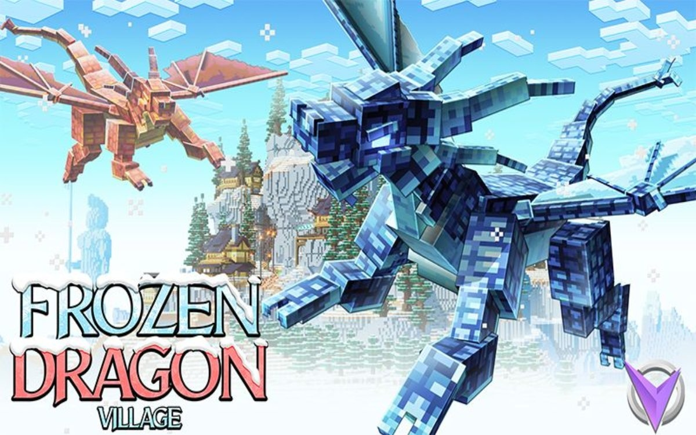
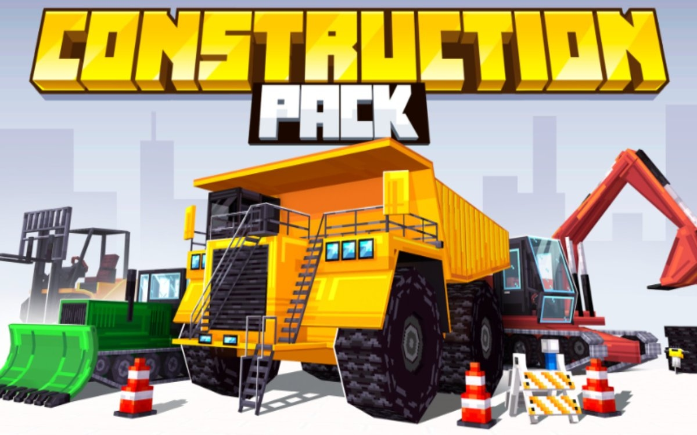
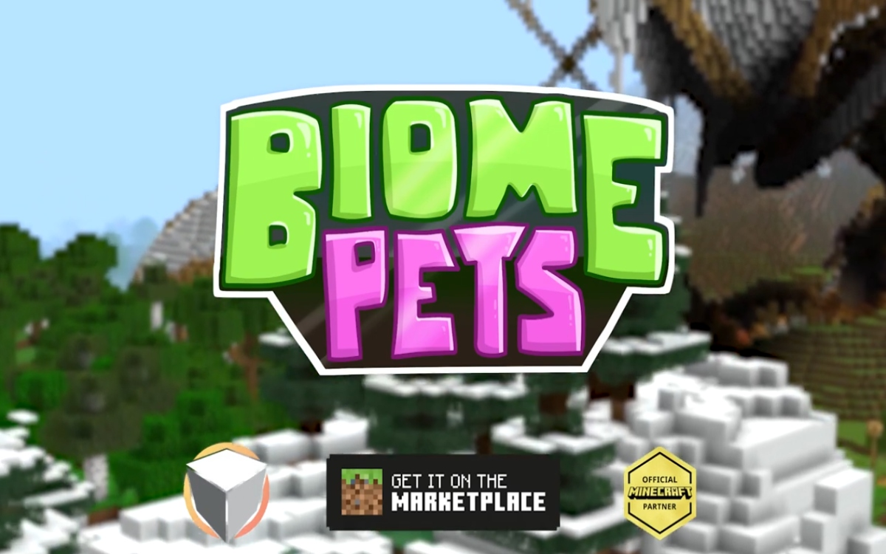
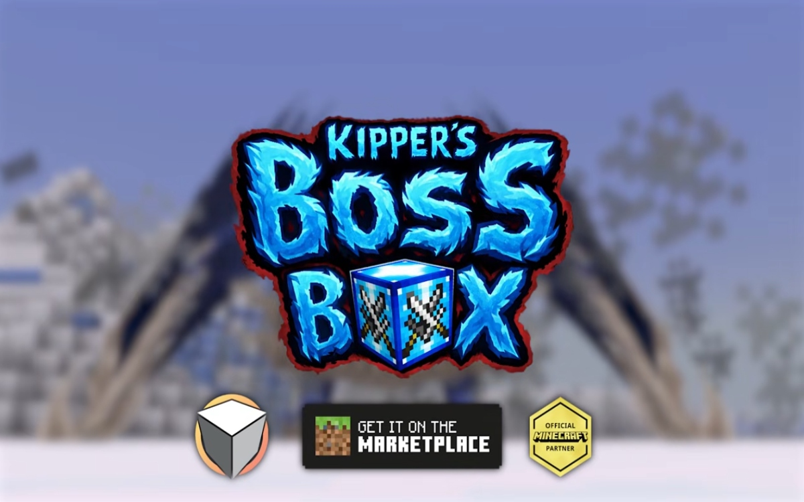
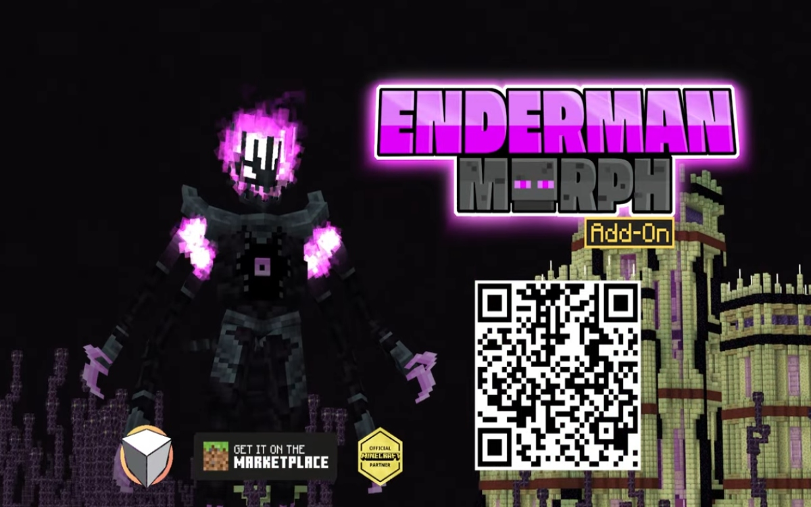
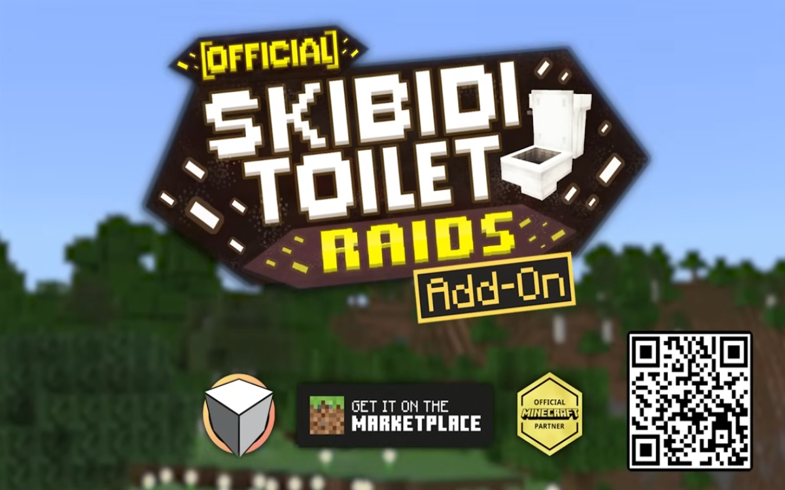

The starting village
In Brazil, the Minecraft Marketplace was not just a platform. It was the way to create a future, prove value fast, and turn problem-solving into momentum.
I started developing on the Minecraft Marketplace to fund a life-changing goal: crossing the distance between Brazil and the United States. That mission sharpened my discipline, turned curiosity into engineering, and built a career around gameplay systems, Bedrock architecture, and polished player experiences.
I'm 23 years old, and games have been part of my life for as long as I can remember.
From growing up with the PS1 and PS2, to spending countless hours on Xbox 360, PC, and Steam, gaming was never just a hobby to me—it was one of the first things that made me feel wonder, curiosity, and connection.
Over time, that love for games turned into something bigger. What started as fascination became study, experimentation, and eventually a real career in game development. Today, I work as a developer focused on Minecraft Bedrock and Marketplace content, building gameplay systems, scripting features, and helping shape projects that reach players around the world.
I still carry the same excitement I had as a kid discovering games for the first time, but now it lives alongside the responsibility and craft of building them. For me, game development is where creativity, problem-solving, and personal meaning meet.
This portfolio is structured like the adventure itself: early quests, rising complexity, bigger worlds, and the point where personal ambition turned into a professional standard.
In Brazil, the Minecraft Marketplace was not just a platform. It was the way to create a future, prove value fast, and turn problem-solving into momentum.
Smaller Bedrock projects became practice grounds for balancing vanilla-feeling mechanics, production limits, and clean implementation under real delivery pressure.
Larger releases demanded scalable systems, maintainable TypeScript, custom behaviors, debugging discipline, and steady collaboration with artists and designers.
The goal was achieved: using Bedrock development to close the distance between two countries. That same drive still defines how I build, communicate, and ship.
The first phase built craft: learning how to ship cleanly, make ideas land, and understand what works for Marketplace players.

An early project where readability, progression, and clean challenge pacing mattered more than noise. A good example of learning how to make a map feel inviting and finishable.

A stronger step into atmosphere-driven Bedrock content, mixing theme, layout, and progression into something more coherent and memorable.

A practical project that sharpened content structure, consistency, and the kind of polish needed when a release must feel dependable inside the Marketplace ecosystem.
These are the kinds of projects that demand stronger architecture, better debugging instincts, and higher confidence under production constraints.

A polished and broad player-facing release that represents the kind of complex feature work Bedrock developers only deliver well with strong systems thinking and iteration discipline.

A release centered on high-impact feature delivery, encounter clarity, and the kind of technical execution needed when the experience itself is the product’s hook.

A technically expressive add-on built around custom player fantasy and transformation logic, the kind of feature work that depends on understanding Bedrock’s boundaries deeply.

A big, highly visible release where scale, spectacle, and implementation discipline had to work together instead of fighting each other.
The strongest pattern across my work is not just making features function. It is making systems hold together cleanly under real production pressure.
Computer Science background, years of Marketplace production, and a habit of treating Bedrock work like real software engineering instead of one-off scripting.
Experience across Marketplace-focused teams including Kubo, Varuna, MrBeast-related work, Team Visionary, Premier Studios, 5 Frame Studios, Refresh Studios, and more.
I am actively looking for stronger long-term opportunities where technical depth, ownership, and clean systems are valued as much as speed.
The résumé link is now live, so recruiters can jump from the story-driven portfolio straight into a formal summary of experience and tools.